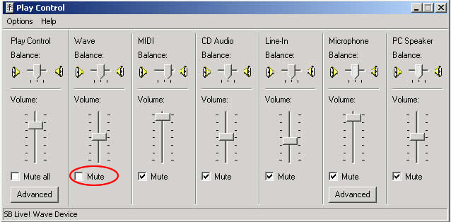
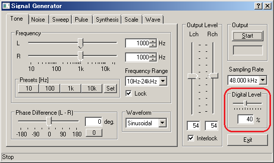
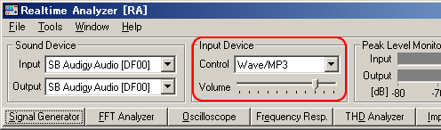

DSSF3 > RA > Operation Guide > Basic measurement procedure
Signal input and output
When measuring sound, analog signal is first converted to digital signal in the soundboard. Then, the digital signal is put in the mixer device in Windows and is taken in to RA. When replaying the test signals created in RA's signal generator, the signal passes the same course in the opposite direction. Windows' sound control program (volume control) is used to select input / output device and to adjust the volume.
Input/output device setting and volume control
Signal output: RA outputs the digital signal (WAVE signal) to the Windows sound mixer. Output volume is adjusted by the Windows volume control.

Open the Windows volume control (Playback). Check the Mute except for WAVE.

Another important function to control the output volume is "Digital Output" in the signal generator. This volume adjusts the range of the digital signal, to make the signal not to be distorted. It is important to remember that many soundboards' performance becomes poor around their maximum output level. Before the measurement, it is highly recommended to check the distortion of the output signal (Adjustment before a measurement).

Signal input: RA inputs the A/D converted signal from the Windows sound mixer. Microphone input, line-in, WAVE signal, and so, can be measured similarly.

Select the input device in the main window of RA. To measure the signal generator's output, select WAVE/DirectSound as below.

In actual measurements, "line" is used as the input device. If your PC does not have a line-in terminal, microphone input terminal can also be used. But note that the quality of PC's mic-in terminal is not good in general. Alternatively, a soundcard with USB or PCMCIA interface is available. Adjustment of the input volume is done by the Windows volume control or by the volume control in RA's main window. These two controls are interlinked for ease of use.
DSSF3 > RA > Operation Guide > Basic measurement procedure